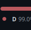
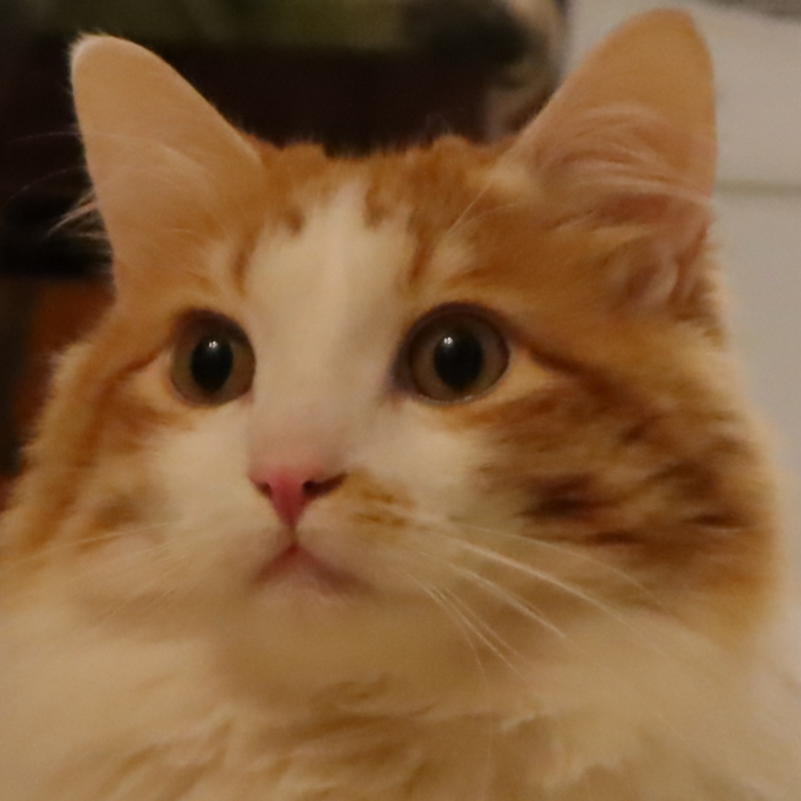

Hi! I'm Komali
Your average nerd, coming to you from Tennessee,

Projects
IL Timer

Islandle
Worldle Unlimited
Multi-Game TAS Comp
Kib
flags.komali.dev
Autowiggler

Toaster's Challenge
Hyrule Bike Challenge

The Amalgamation
Blogs and Such
• Linking Haskell with C: The Wrong Way
Cool People

Peri
@ periwinkle.sh
Puperger
@ puperger.github.io
Lior
@ underscore.wtf